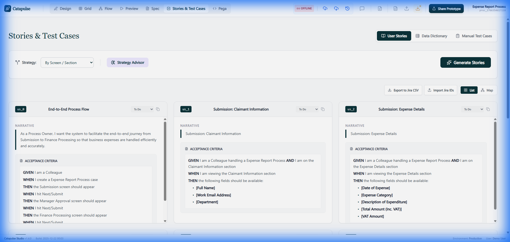

The AI-Native Workspace for Business-First Process Design & Automation.
Don't just build, visualize. Catapulse offers context-aware views for every stakeholder.
Build high-fidelity forms with our drag-and-drop canvas. Add complex visibility and validation logic without writing a single line of code.
Perfect for: Business Analysts & Architects
Map your journey vertically and horizontally. Visualize 'Happy Paths' alongside automated 'Skip Logic' arcs that dynamically bypass stages based on data.
Perfect for: Process Owners & Engineers
Catapulse is powered by Gemini 3 Flash, providing built-in AI for every step of the lifecycle.

Run your process instantly with persona-driven mock data. Test rules and routing in a high-fidelity preview.
Manage hundreds of data elements with a high-performance spreadsheet interface. Bulk edit attributes effortlessly.
Export your designs directly to Pega Systems Infinity. Clean mapping from BA intent to Dev execution.